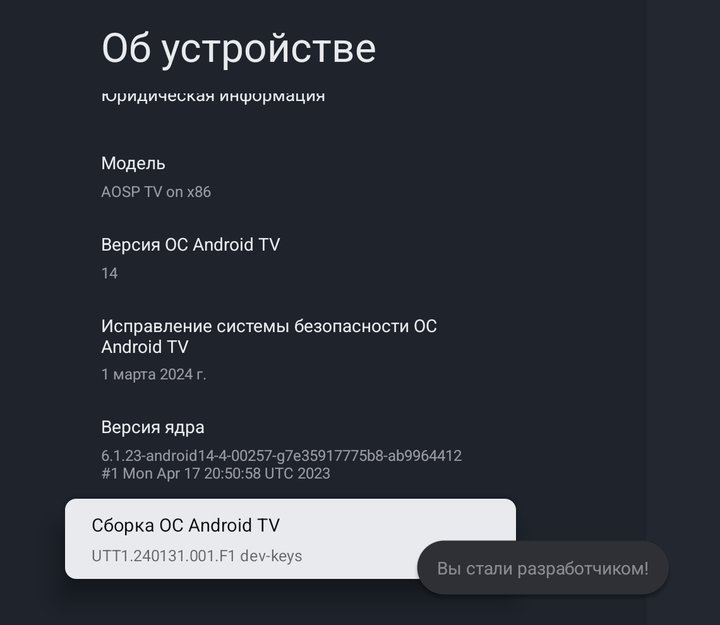
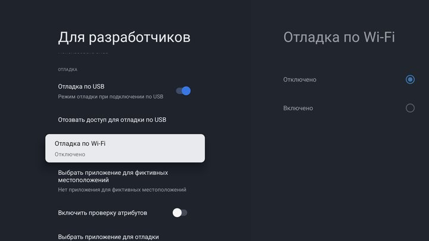
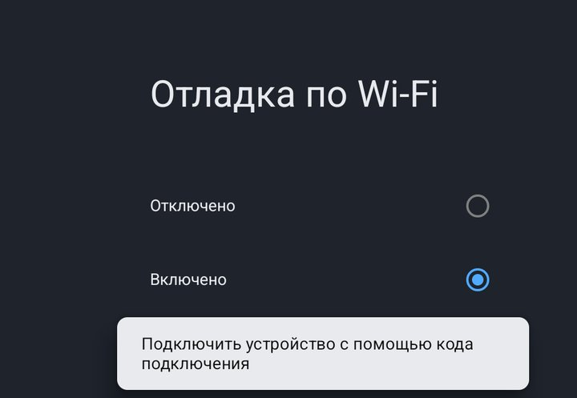
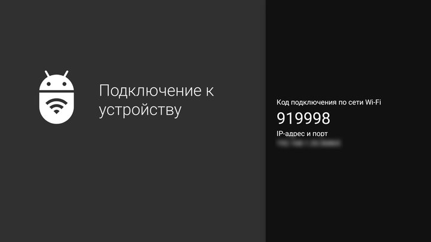

1Компьютер
Проверяю…
2Подключите телевизор
Сначала телевизору нужно разрешить подключение с этого компьютера. Это обычная служебная настройка Google TV, она нужна один раз: четыре шага пультом, пара минут. Если телевизор уже нашёлся выше, шаги не нужны.

На телевизоре откройте Настройки, Система, Об устройстве
. Внизу найдите строку Сборка ОС Android TV
и нажмите на ней OK семь раз подряд. Появится надпись Вы стали разработчиком!
: так и должно быть, это просто открывает служебное меню.

Вернитесь в Система
: внизу появился пункт Для разработчиков
. В нём откройте Отладка по Wi-Fi
(на некоторых телевизорах он называется Беспроводная отладка
).

Выберите Включено
. Если телевизор спросит, разрешить ли отладку в этой сети, отметьте Всегда
и нажмите Разрешить
. Затем нажмите Подключить устройство с помощью кода подключения
. Отладке нужен Wi-Fi, даже если телевизор подключён кабелем.

Шесть цифр из строки Код подключения по сети Wi-Fi
. Окно на телевизоре не закрывайте, пока не подключится. Код не подошёл: нажмите на телевизоре Назад
, снова Подключить устройство с помощью кода подключения
и введите новый код.
Ввести адрес вручную
Адрес для подключения: на телевизоре в Отладка по Wi-Fi
строка IP-адрес и порт
.
Адрес из окна с кодом (он другой, чем на главном экране отладки), если телевизор не нашёлся сам: